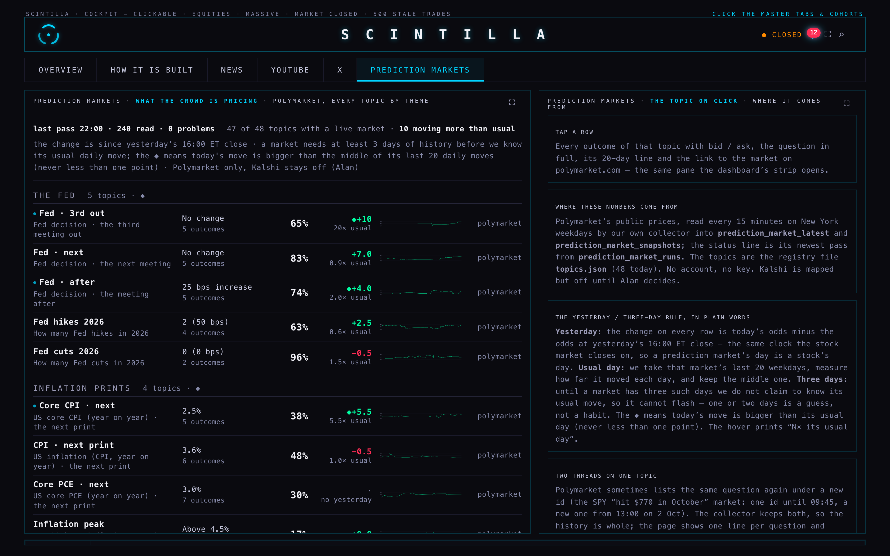
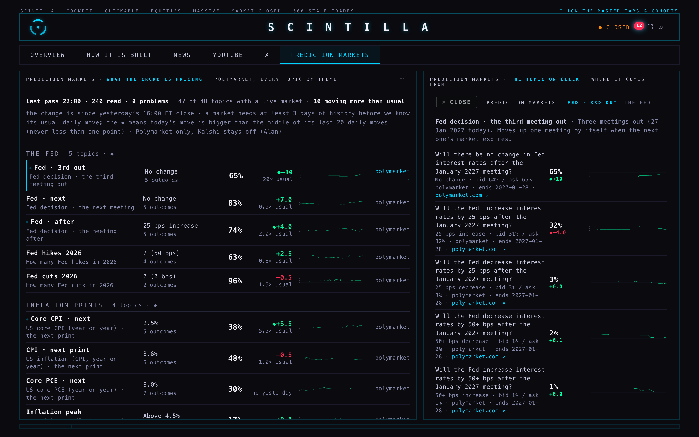
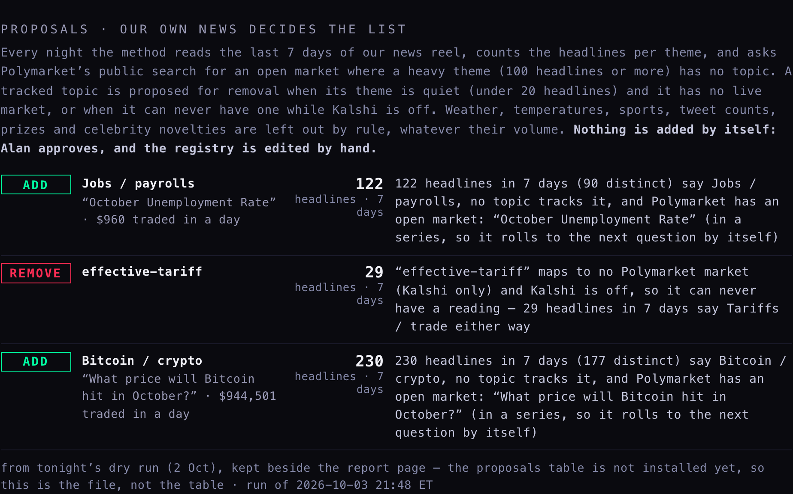
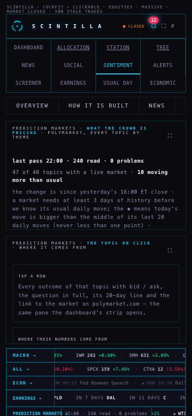
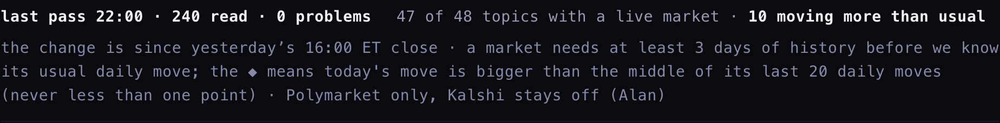

P2 · 2 October 2026, night · branch hub/p2-prediction-section-20261002 · built on the branch; the coordinator reviews and ships. Nothing was deployed, no cron, collector, registry or existing table was changed.





Alan: "leave the strip, but we need a full section for this. It's either in sentiment or in social." It is in SENTIMENT, as a sixth sub-tab after X. Reason: a prediction market is a crowd's priced expectation, the same family as the fear-and-greed gauges in that room; SOCIAL is about who said what on which platform, and the Polymarket crowd is not a voice we read. The SENTIMENT row had the room for one more tab; SOCIAL's four tabs are already a full row on a phone. The dashboard strip stays as it was; its label (PREDICTION MARKETS →) now opens the section, and the pane the strip opens carries a line "every topic, by theme →". The address #prediction opens the section directly.
What a row shows, where each number comes from: the odds and the outcome are the newest reading in prediction_market_latest (the collector writes every 15 minutes on New York weekdays, cron 278, unchanged). The change and the "N× usual" are the same maths as the strip's chips, from prediction_market_snapshots, so a number here is the number on the chip. The 20-day line is the same snapshots. The venue link is the market's own page on polymarket.com, found through Polymarket's public API once the row is drawn; until it answers the venue is named, nothing is guessed. The status line is the newest pass in prediction_market_runs, red when older than 45 minutes or when the pass logged a problem.
What was actually visible in the headless walk (1680 wide, device scale 2, and 390 wide): 47 rows with a live market, one quiet row (effective-tariff: no live market), 10 rows flashing (fed-2027-01, fed-2026-12, core-cpi, spx-2026, largest-company, senate-2026, nato-russia, boj-after, usdjpy-2026, ecb-next), the three proposals, the ladder of Fed · 3rd out with five outcomes and five lines, ✕ CLOSE restoring the five cards, and the strip's label opening the section from the dashboard. No page error; no write left the browser (every non-GET request is answered locally and counted: zero).
Alan: "We never agreed on the topics … we need a methodology that scans the news from our streams, makes a list and tracks it." The method, in plain words:
public.news — tonight 36,174 headlines, newest 2026-10-03 01:35Z).supabase/functions/prediction-topic-proposals/lib.mjs, and every count is printed with its proposal.topics.json is edited by hand; an approved topic keeps its first id so its history stays joined.Tonight's run (dry, nothing written; run id proposals-20261003T014823Z):
| theme / topic | headlines · 7 d | why | |
|---|---|---|---|
| ADD | Jobs / payrolls “October Unemployment Rate” | 122 | 122 headlines in 7 days (90 distinct) say Jobs / payrolls, no topic tracks it, and Polymarket has an open market: “October Unemployment Rate” (in a series, so it rolls to the next question by itself) |
| REMOVE | effective-tariff | 29 | “effective-tariff” maps to no Polymarket market (Kalshi only) and Kalshi is off, so it can never have a reading — 29 headlines in 7 days say Tariffs / trade either way |
| ADD | Bitcoin / crypto “What price will Bitcoin hit in October?” | 230 | 230 headlines in 7 days (177 distinct) say Bitcoin / crypto, no topic tracks it, and Polymarket has an open market: “What price will Bitcoin hit in October?” (in a series, so it rolls to the next question by itself) |
Payrolls: the brief expected a payrolls market; Polymarket has no non-farm-payrolls market, so the search found the unemployment-rate series instead (series 10044, rolls monthly) — a fair stand-in for the jobs report, but it is Alan's call. Shutdown: the brief named it as a likely REMOVE; by the rule it stays, because its companion market ("Another US government shutdown & House winner 2026?") is still live even though only 1 headline in 7 days says shutdown. The 2-year yield topic was already removed by R1b.
Every theme tonight, so a topic's place is a number and not an opinion:
| theme | headlines | distinct titles | kind | tracked topics | reading |
|---|---|---|---|---|---|
| S&P / stocks | 2,191 | 1,819 | instrument | spx-2026, spy-month, largest-company | heavy |
| Earnings | 1,203 | 1,078 | company | — | heavy |
| Price target | 1,142 | 1,023 | company | — | heavy |
| Treasury yields | 565 | 418 | instrument | ust10-2026, ust30-2026 | heavy |
| AI bubble / data centres | 420 | 309 | macro | ai-bubble, ai-regulation | heavy |
| Oil / OPEC | 351 | 293 | instrument | wti-month, oil-ath, opec-exit, hormuz | heavy |
| China / Taiwan | 313 | 273 | macro | taiwan-invade, taiwan-blockade, taiwan-clash | heavy |
| Gold | 259 | 205 | instrument | gold-month | heavy |
| Bitcoin / crypto | 230 | 177 | instrument | — | heavy |
| CPI / inflation | 168 | 136 | macro | cpi-annual, core-cpi, inflation-peak-2026 | heavy |
| Iran | 166 | 119 | macro | iran-us-ceasefire, iran-israel-ceasefire, iran-blockade, iran-invasion, iran-nuclear-deal | heavy |
| Fed / rates | 161 | 118 | macro | fed-2026-10, fed-2026-12, fed-2027-01, fed-hikes-2026, fed-cuts-2026 | heavy |
| IPO / lock-up | 143 | 120 | company | — | heavy |
| Jobs / payrolls | 122 | 90 | macro | — | heavy |
| Offering / dilution | 79 | 67 | company | — | middling |
| PCE | 40 | 35 | macro | core-pce | middling |
| Elections / midterms | 38 | 33 | macro | house-2026, senate-2026, congress-2026 | middling |
| GDP / recession | 36 | 20 | macro | gdp-2026, recession-2026, recession-2027 | middling |
| Tariffs / trade | 29 | 25 | macro | china-tariff, trade-deals, effective-tariff | middling |
| Ethereum | 29 | 12 | instrument | — | middling |
| Washington / debt | 24 | 24 | macro | us-debt | middling |
| Russia / Ukraine | 22 | 21 | macro | ukraine-ceasefire, ukraine-talks, nato-russia, putin-out | middling |
| ECB / Europe | 22 | 20 | macro | ecb-next | middling |
| Yen / BoJ | 14 | 14 | macro | boj-next, boj-after, usdjpy-2026 | quiet |
| Shutdown | 1 | 1 | macro | shutdown | quiet |
What was built for it: a keyless module (the method itself), a node script scripts/prediction-topic-proposals.mjs (dry run by default; --write needs the coordinator's service key in the environment, never on this Mac), an edge function supabase/functions/prediction-topic-proposals with modes dry and write (not deployed; the coordinator deploys), and the additive migration supabase/migrations/20261002_prediction_topic_proposals.sql for the new table public.prediction_topic_proposals (anon read like the other prediction tables; service role writes; status moves proposed → approved / declined by hand). Its rollback is written first, at _archive/backend-fix-20260928/ROLLBACK-prediction_topic_proposals-20261002.sql and beside the migration. The section reads the table when it exists and falls back to tonight's dry-run file until then, and says which it is showing.
"Two threads on the same topic." Polymarket sometimes lists the same question again under a new id. The SPY "hit $770 in October" market was one id until 09:45 on 2 Oct and a new id from 13:00. The collector keeps both, so the history is whole and nothing is lost; the page shows one line per question and takes the newest reading, so the same question is never printed twice. When a topic truly has two live questions — the Fed's next meeting and the one after — both are rows, as Alan said: "fine, we track them both."
"The yesterday / three-day rule." Yesterday: the change on every row is today's odds minus the odds at yesterday's 16:00 ET close — the same clock the stock market closes on, so a prediction market's day is a stock's day. Usual day: we take that market's last 20 weekdays, measure how far it moved each day, and keep the middle one (never less than one point). Three days: until a market has three such days we do not claim to know its usual move, so it cannot flash — one or two days is a guess, not a habit. The ◆ means today's move is bigger than its usual day; the hover prints "N× its usual day" (never a sigma). The rule is printed in one sentence at the top of the section.
What each source gives, probed tonight with one read-only request each from this Mac:
| source | what it gives | cost | terms | how fresh | tonight |
|---|---|---|---|---|---|
| Polymarket's own volume ranks | the open markets by 24-hour volume (gamma-api /events?order=volume24hr), with tags | free, no key | public read endpoints; the written terms could not be read (page rendered by script) — same open question as the collector's | live | answered: Brazil's election, the Fed in October, Bitcoin ladders, the midterms, Iran, the Oklahoma data-centre moratorium — and sports |
| StockTwits trending symbols | ~30 trending tickers with names (api.stocktwits.com/api/2/trending/symbols.json) | free, no key for this endpoint | StockTwits API terms: non-commercial display with attribution; the Hub already holds a StockTwits key for its lane | minutes | answered: CBRS (Cerebras) first |
| Yahoo Finance trending tickers | 20 trending US symbols (query1.finance.yahoo.com/v1/finance/trending/US), symbols only | free, undocumented | undocumented endpoint; Yahoo's terms forbid automated access — a scrape in all but name | minutes | answered: SPCX, WDC, GME, STX, VST, HPE … |
| Reddit (r/wallstreetbets hot) | post titles and scores | free with an app key (the Hub has Reddit keys set) | Reddit Data API terms: allowed with OAuth, rate-limited, no training use | minutes | answered 403 without OAuth (expected) |
| Google Trends daily RSS | the day's top searches, all subjects (trends.google.com/trending/rss?geo=US) | free | no API; the RSS is public | daily | answered: celebrity and sports searches, nothing financial |
| investing.com trending stocks | a page, no API | free to read, no API | terms forbid scraping | live | answered 403 to a plain request |
| X / Twitter highlighted news and trends | trends by place (api.x.com/2/trends/by/woeid) | paid API tier only | X developer terms; a paid plan | live | answered 401 (no key, by design) |
One recommendation: use StockTwits trending for tickers (free, keyed, fresh, terms allow display with attribution, and the Hub already has the lane) and Polymarket's own volume ranks for topics, filtered by the same exclusion rule, as a second input to the proposals — never as a card by itself. Leave Yahoo and investing.com alone (scrapes against their terms), keep Reddit for later (it needs the OAuth lane), and X only if Alan wants to pay for the API.
Tests: tests/p2-prediction-section-20261002.test.mjs (10 tests over fixtures, no network). Hub suite: 1,768 tests, the 5 known failures, nothing new. Trial copy rebuilt after every change to index.html.